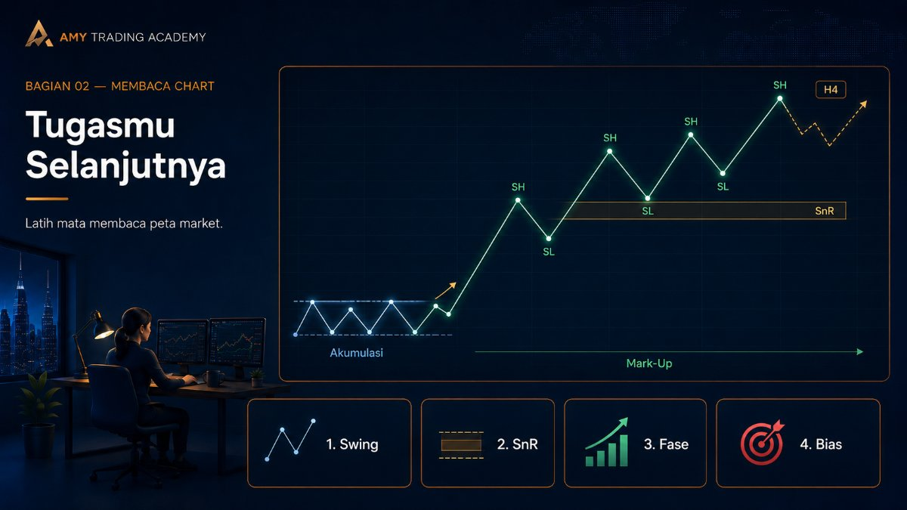

Market Structure Dasar

Selamat! Kamu telah mencapai bab puncak dari Bagian 02. Jika di bab-bab sebelumnya kita telah mengumpulkan potongan-potongan puzzle—mulai dari anatomi Candlestick, lekukan Swing High dan Swing Low, arah Trend, hingga tembok-tembok Support dan Resistance—maka sekarang saatnya kita menyusun semua potongan itu menjadi satu lukisan utuh yang disebut dengan Market Structure (Struktur Pasar).
Membaca Market Structure adalah skill level dewa yang membedakan seorang trader profesional dari seorang penjudi tebak-tebakan. Tanpa memahami Market Structure, kamu seperti menyetir mobil dengan mata tertutup.
Siklus Kehidupan Harga (The Market Cycle)

Harga di market tidak bergerak secara acak. Mereka mengikuti sebuah siklus kehidupan yang terus berulang seperti musim (Semi, Panas, Gugur, Dingin). Ada empat fase utama dalam Market Structure:
- Fase Akumulasi (Sideways di Bawah): Musim Semi. Harga sedang mondar-mandir di area Support (lantai) bawah. Di sinilah para institusi besar (Smart Money) sedang diam-diam mengumpulkan barang (membeli) pelan-pelan tanpa membuat harga loncat. Bagi pemula, ini terlihat membosankan.
- Fase Mark-Up (Uptrend): Musim Panas! Setelah bensin penuh, harga akhirnya menjebol Resistance (atap) dan melesat ke atas. Terbentuklah struktur Higher High (HH) dan Higher Low (HL) yang rapi. Di fase inilah kita sebagai trader ritel masuk dan ikut pesta dengan mencari posisi Buy. Setiap kali Resistance dijebol, ia berubah menjadi Support baru (RBS).
- Fase Distribusi (Sideways di Atas): Musim Gugur. Harga mulai kehabisan bensin. Pembeli mulai ragu, dan institusi besar mulai diam-diam mencairkan profit (menjual/distribusi barang). Harga terjebak lagi di kotak kemacetan (Sideways), tapi kali ini di posisi puncak.
- Fase Mark-Down (Downtrend): Musim Dingin. Tembok Support (lantai) terakhir akhirnya jebol. Kepanikan terjadi, dan harga terjun bebas membentuk struktur Lower Low (LL) dan Lower High (LH). Di sinilah kita mencari posisi Sell. Setiap kali Support dijebol, ia berubah menjadi Resistance baru (SBR).
Dua Kata Sandi Utama: BOS dan CHoCH

Untuk membaca kapan siklus ini berlanjut dan kapan ia berputar balik, ada dua istilah modern yang sangat sering dipakai oleh trader saat membaca struktur:
1. BOS (Break of Structure) - "Gas Terus!"
BOS terjadi ketika harga berhasil menembus dan melanjutkan tren searahnya. Misalnya, dalam kondisi Uptrend, ketika harga berhasil menembus puncak sebelumnya (Higher High) dan mencetak puncak yang lebih tinggi lagi, itu disebut BOS. Munculnya BOS adalah konfirmasi valid bahwa tren saat ini masih sehat dan akan terus berlanjut.
2. CHoCH (Change of Character) - "Awas Putar Balik!"
CHoCH adalah peringatan dini bahwa karakter pasar mulai berubah arah (awal mula pergantian tren). Misalnya, pasar sedang asyik Uptrend membuat HL dan HH, tapi tiba-tiba harga terjun deras dan menjebol lembah (Higher Low) terakhirnya. Penembusan ke arah berlawanan inilah yang disebut CHoCH. Ini adalah alarm keras: "Awas, Musim Panas mungkin sudah berakhir, siap-siap masuk Musim Gugur/Dingin!"
Tugasmu Selanjutnya

Pesan Mentor: Jangan terburu-buru mencari indikator ajaib yang warnanya kelap-kelip. Jangan terburu-buru mencari titik "Buy di sini, Sell di situ".
Skill pertama dan terpenting yang harus kamu kuasai sampai di luar kepala adalah menggambar peta (Market Structure) ini di chart kosong. Buka chart apa saja (Gold, Forex, atau Crypto), ubah ke timeframe H4, lalu mulailah menggambar Swing High, Swing Low, SnR, dan tandai jika terjadi penembusan.
Tanyakan pada dirimu sendiri: "Kita sedang berada di fase musim apa sekarang? Musim Semi (Akumulasi), atau Musim Panas (Mark-Up)?" Jika kamu sudah bisa menjawab pertanyaan itu dengan percaya diri dalam waktu kurang dari 5 detik saat melihat chart, maka kamu sudah siap untuk masuk ke Bagian 03, di mana kita akan mulai membedah Liquidity dan misteri mengapa harga sering menipu kita.